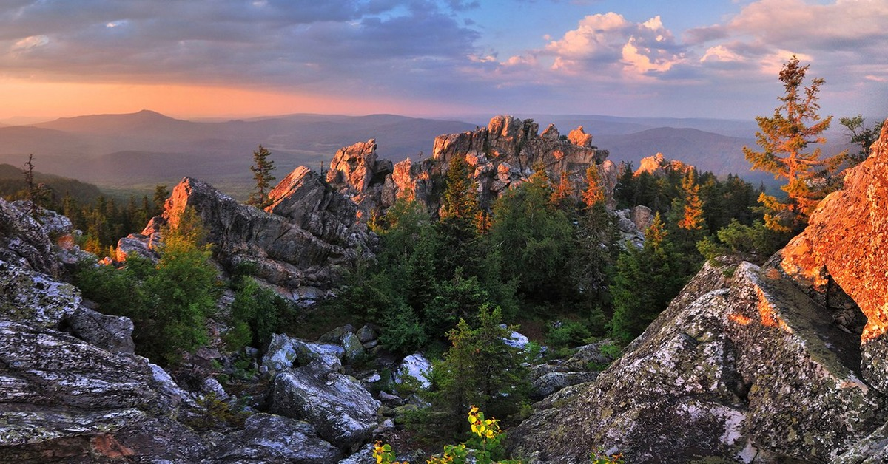
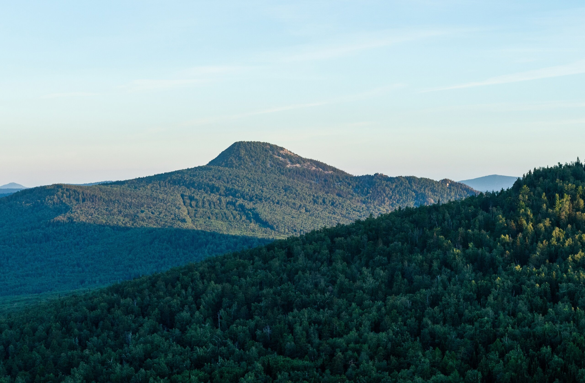

Белорецкий район
Жемчужина Уральских гор
Белорецкий район — один из самых живописных в Башкортостане. Здесь находятся высочайшие вершины Южного Урала, кристально чистые озера и густые хвойные леса. Это идеальное место для активного туризма, сплавов и треккинга.
🧭 Чем богат район
Галерея



